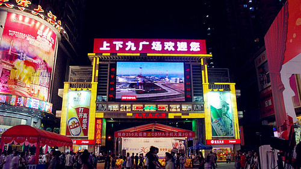
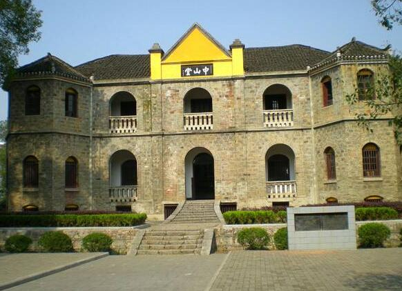

广州塔位于广州市中心，城市新中轴线与珠江景观轴交汇处，与海心沙岛和广州市21世纪CBD区珠江新城隔江相望。广州塔北临40米宽的滨江路和滨江绿化步行带：南临40米宽的双塔路，东西两侧分别为30米宽的艺苑东、西路。
地理位置
广州塔-详细介绍
广州塔（英语：Canton Tower）又称广州新电视塔，昵称小蛮腰，位于中国广州市海珠区（艺洲岛）赤岗塔附近，距离珠江南岸125米，与海心沙岛和广州市21世纪CBD区珠江新城隔江相望。广州塔塔身主体454米（塔顶观光平台最高处488米），天线桅杆150米，总高度600米。
广州塔隶属广州城投集团由广州市建筑集团有限公司和上海建工集团负责施工，总建筑面积114054平方米，已于2009年9月竣工。广州塔已于2010年9月30日正式对外开放，2010年10月1日起正式公开售票接待游客。
广州塔有5个功能区和多种游乐设施，包括488m的世界最高的世界户外观景平台、高空横向摩天轮，极速云霄极限游乐项目，有2个观光大厅，有悬空走廊，天梯，4D和3D动感影院，中西美食，会展设施，购物商场及科普展示厅。广州塔是中国第一高塔，世界第四高塔（截止2014年）。
中文名为“广州塔”。世界大多数电视塔均以地名命名，广州电视塔也需要使用地名命名，因为有海外调查资料显示在纯粹的老外中，对中国城市的了解主要是北京和上海，对广州比较陌生，时常不知广州在中国何处。因此，广州电视塔的命名不仅是命名的问题，应该承载向全世界传播“广州”概念的要素。
广州塔定位以观光旅游为主，兼容广播电视发射功能的综合性设施，成为广州重要的地标性建筑。 新电视塔建设工程，是广州的新地标、新形象，除了为即将到来的亚运会转播提供硬件支持，还将有助于提升广州的文化设施水平。
广州塔隶属广州城投集团由广州市建筑集团有限公司和上海建工集团负责施工，总建筑面积114054平方米，已于2009年9月竣工。广州塔已于2010年9月30日正式对外开放，2010年10月1日起正式公开售票接待游客。
广州塔有5个功能区和多种游乐设施，包括488m的世界最高的世界户外观景平台、高空横向摩天轮，极速云霄极限游乐项目，有2个观光大厅，有悬空走廊，天梯，4D和3D动感影院，中西美食，会展设施，购物商场及科普展示厅。广州塔是中国第一高塔，世界第四高塔（截止2014年）。
中文名为“广州塔”。世界大多数电视塔均以地名命名，广州电视塔也需要使用地名命名，因为有海外调查资料显示在纯粹的老外中，对中国城市的了解主要是北京和上海，对广州比较陌生，时常不知广州在中国何处。因此，广州电视塔的命名不仅是命名的问题，应该承载向全世界传播“广州”概念的要素。
广州塔定位以观光旅游为主，兼容广播电视发射功能的综合性设施，成为广州重要的地标性建筑。 新电视塔建设工程，是广州的新地标、新形象，除了为即将到来的亚运会转播提供硬件支持，还将有助于提升广州的文化设施水平。
旅游信息
票务：①营业时间：9时~23时，节假日可能延长；②门票价格：150.00元/人；③身高1.2米以下儿童免票；身高1.2~1.5米儿童，优惠价为100.00元/人；④18周岁以下全日制在校学生凭学生证，优惠价为120.00元/人；
交通：①地铁：地铁3号线广州塔站通道B出口下直达广州塔；③公交：121等多条公交线路直达广州塔；
地理位置
白云山位于广州市的东北部，地理位置为东经113°17′，北纬23°11′。地形略呈斜长方形，呈东北西南走向，东西宽约4公里，南北长约7公里。全境面积为28平方公里，其中属特别保护范围的面积为20．98平方公里。
白云山-详细介绍
广州白云山位于广州市北部，是南粤名山之一，被命名为“羊城第一秀”、“南越第一山”。它由30多座山峰组成，登高可俯览广州全市以及可以遥望珠江。每当雨后天晴或暮春时节，山间白云缭绕，山名由此得来。
广州白云山景区分为七个游览区，即明珠楼游览区、摩星岭游览区、鸣春谷游览区、三台岭游览区、麓湖游览区、飞鹅岭游览区以及荷依岭游览区。在景区内不仅能够欣赏自然美景，还能体验滑草、滑道、小型蹦极等娱乐项目。
白云山有丰富的自然资源。植被种类相当丰富，拥有植物876种，其中有5种国家保护的珍稀濒危植物：鹅掌揪、土治香、降香黄檀、油杉、大叶竹柏等。野生的657种植物中，许多种类具有潜在的经济价值，如用材树种86种，药用植物343种，野生观赏植物97种。
白云山的绿化覆盖率已达95%以上，白云山共有绿化面积4.2万亩，每天可吸收2800吨二氧化碳，放出2100吨氧气，可供近300万人正常呼吸之用，被称为广州的“市肺”。白云山空气质量已达国家一级标准，噪声质量达国家0类标准，地表水质也达到国际规定。一些山涧水、泉水甚至可以直接饮用。
2011年1月21日，国家旅游局正式批准广州市白云山风景名胜区为国家5A级旅游景区，这是广州市区唯一一家国家5A级旅游景区。3月18日，白云山管理局在云台花园挂牌仪式。同时，国家旅游局确定的“全国首批旅游标准化试点单位”中，白云山也成为广东省唯一一家。
广州白云山景区分为七个游览区，即明珠楼游览区、摩星岭游览区、鸣春谷游览区、三台岭游览区、麓湖游览区、飞鹅岭游览区以及荷依岭游览区。在景区内不仅能够欣赏自然美景，还能体验滑草、滑道、小型蹦极等娱乐项目。
白云山有丰富的自然资源。植被种类相当丰富，拥有植物876种，其中有5种国家保护的珍稀濒危植物：鹅掌揪、土治香、降香黄檀、油杉、大叶竹柏等。野生的657种植物中，许多种类具有潜在的经济价值，如用材树种86种，药用植物343种，野生观赏植物97种。
白云山的绿化覆盖率已达95%以上，白云山共有绿化面积4.2万亩，每天可吸收2800吨二氧化碳，放出2100吨氧气，可供近300万人正常呼吸之用，被称为广州的“市肺”。白云山空气质量已达国家一级标准，噪声质量达国家0类标准，地表水质也达到国际规定。一些山涧水、泉水甚至可以直接饮用。
2011年1月21日，国家旅游局正式批准广州市白云山风景名胜区为国家5A级旅游景区，这是广州市区唯一一家国家5A级旅游景区。3月18日，白云山管理局在云台花园挂牌仪式。同时，国家旅游局确定的“全国首批旅游标准化试点单位”中，白云山也成为广东省唯一一家。
旅游信息
票务：
山南门岗5元；云台花园10元；星海园3元；索道票价：上行 25元，下行20元，双程：40元。滑道20元。注：身高1.1米以下的儿童免票，1.1米至1.4米的儿童实行半票优惠。
交通：
至白云山西门站：广州36路公交线路、广州38路公交线路、广州76路、广州76A公交线路等多路公交
地理位置
上下九步行街地处广州市荔湾区（俗称西关）的上九路、下九路、第十甫路之间，是广州市三大传统繁荣商业中心之一。全长约1237米，共有各类商业店铺238间和数千商户。
上下九步行街-详细介绍
闻名遐迩的上下九商业街位于老城区西关，东起上下九路，西至第十甫西，横贯宝华路、文昌路，全长1237多米，全路段店铺林立、共有商店300多家，日客流量达60万次。荟萃了岭南文化中的老西关美食文化、岭南饮食文化和岭南民俗风情。
上下九步行街的标志性建筑是连绵千米的骑楼街，骑楼适应南方炎热多雨气候，可以挡避风雨侵袭，挡避炎阳照射，造成凉爽环境。骑楼源自新加坡、香港等英属殖民地，广州的骑楼是清代两广总督张之洞参考香港的经验而引入到广州的建筑，上下九的骑楼建于20世纪30年代初。
历数上下九的美食，有“银记”肠粉；“欧成记”上汤鲜虾云吞面；“伍湛记”的及第粥、鱼皮粥；“广州酒家”的灌汤饺、虾饺、烧卖、萝卜糕；“莲香楼”的莲蓉月饼、鸡仔饼、老婆饼和龙凤结婚礼饼；陶陶居的姜葱鸡、奶黄包；“南信”的双皮奶、姜撞奶和牛三星；“林林”的牛杂和猪红汤……
在数以百计的西关小食中，公认是名牌的有20多种，其中有10种还被评为“中华名小吃”，如：南信甜品专家的“南信双皮奶”和“南信姜撞奶”，欧成记面食的“上汤鲜虾云吞”，伍湛记粥品的“伍湛记及第粥”，莲香楼的“老婆饼”，银记的豉油牛肉肠等。
下九路的“文澜阁”，印证着昔日十三行富商组建的“文澜书院”的历史；湛露直街，是清同治年间的状元梁耀枢曾住过的地方。陶陶居历史上是粤剧艺人的聚所，曾以“西关古坛”、霜华小苑书画展驰名，这里群众的自娱自乐粤曲演唱“私伙局”，也颇具名气。十甫书店的荔湾雅苑书画展销厅、上演粤剧的平安戏院，更是这条步行街上的文化绿洲。
上下九步行街的标志性建筑是连绵千米的骑楼街，骑楼适应南方炎热多雨气候，可以挡避风雨侵袭，挡避炎阳照射，造成凉爽环境。骑楼源自新加坡、香港等英属殖民地，广州的骑楼是清代两广总督张之洞参考香港的经验而引入到广州的建筑，上下九的骑楼建于20世纪30年代初。
历数上下九的美食，有“银记”肠粉；“欧成记”上汤鲜虾云吞面；“伍湛记”的及第粥、鱼皮粥；“广州酒家”的灌汤饺、虾饺、烧卖、萝卜糕；“莲香楼”的莲蓉月饼、鸡仔饼、老婆饼和龙凤结婚礼饼；陶陶居的姜葱鸡、奶黄包；“南信”的双皮奶、姜撞奶和牛三星；“林林”的牛杂和猪红汤……
在数以百计的西关小食中，公认是名牌的有20多种，其中有10种还被评为“中华名小吃”，如：南信甜品专家的“南信双皮奶”和“南信姜撞奶”，欧成记面食的“上汤鲜虾云吞”，伍湛记粥品的“伍湛记及第粥”，莲香楼的“老婆饼”，银记的豉油牛肉肠等。
下九路的“文澜阁”，印证着昔日十三行富商组建的“文澜书院”的历史；湛露直街，是清同治年间的状元梁耀枢曾住过的地方。陶陶居历史上是粤剧艺人的聚所，曾以“西关古坛”、霜华小苑书画展驰名，这里群众的自娱自乐粤曲演唱“私伙局”，也颇具名气。十甫书店的荔湾雅苑书画展销厅、上演粤剧的平安戏院，更是这条步行街上的文化绿洲。
旅游信息

票务：①营业时间：全天开放；②门票价格：免费；
交通：①地铁：地铁一号线长寿路站；③公交：可以搭乘到达恒宝广场总站，长寿西站，和平西站，和平中站，德星路总站，康王路总站，上九路站和上九东站；
地理位置
长隆欢乐世界地处广州番禺迎宾路，首期占地面积1000多亩，游乐设施近70项。欢乐世界引进了瑞士、荷兰、美国等全球领先的游乐设备公司的设备，其中包括：垂直过山车、十环过山车、摩托过山车、U型摩天滑板和超级水车大战等。
长隆欢乐世界-详细介绍
长隆欢乐世界坐落在广州番禺迎宾路，占地面积2000多亩，游乐设施近70项。欢乐世界引进了瑞士、荷兰、德国、意大利、美国等全球领先的游乐设备公司的设备。
其中包括：“全球过山车之王”垂直过山车、创吉尼斯世界纪录的十环过山车、荣获行业设计金奖的摩托过山车、超级大摆锤、东半球唯一的U型滑板等世界级巅峰游乐项目。
长隆欢乐世界拥有游乐设施70余套，是目前国内在设备上投入至多、引进至多的全球大型游乐园。大部分游乐设备均从欧洲原装进口，其设计与技术均保持国际领先水平，其独有八项亚洲及世界之最，包括：垂直过山车、十环过山车、摩托过山车、飞马家庭过山车、U型滑板、超级水战、特技表演、超级大摆锤以及目前世界上至垂直过山车、十环过山车为全球仅有的第二台，而垂直过山车仅单项投资就超过2亿元人民币。
全园分为儿童游乐项目为主的以及适合合家游玩的哈比王国、以大型惊险刺激设备为主的尖叫地带、以中古欧洲风格为主的旋风岛、以过山车王为主题的彩虹湾、以水为主题的欢乐水世界、以表演为主的中心演艺广场、以观赏类项目为主的历险天地、以及以购物休闲为主的白虎大街等八大主题区域。
十大必玩排行榜长隆欢乐世界，新一代世界级乐园的典范之作，在这里，您可以体验众多亚洲首台和世界顶尖游乐带来的张狂刺激，也可以与孩子、家人一起，共享数十项多彩游乐带来的天伦之乐，更可以欣赏到无与伦比的世界级精彩表演，充分感受世界级乐园的超凡魅力！
其中包括：“全球过山车之王”垂直过山车、创吉尼斯世界纪录的十环过山车、荣获行业设计金奖的摩托过山车、超级大摆锤、东半球唯一的U型滑板等世界级巅峰游乐项目。
长隆欢乐世界拥有游乐设施70余套，是目前国内在设备上投入至多、引进至多的全球大型游乐园。大部分游乐设备均从欧洲原装进口，其设计与技术均保持国际领先水平，其独有八项亚洲及世界之最，包括：垂直过山车、十环过山车、摩托过山车、飞马家庭过山车、U型滑板、超级水战、特技表演、超级大摆锤以及目前世界上至垂直过山车、十环过山车为全球仅有的第二台，而垂直过山车仅单项投资就超过2亿元人民币。
全园分为儿童游乐项目为主的以及适合合家游玩的哈比王国、以大型惊险刺激设备为主的尖叫地带、以中古欧洲风格为主的旋风岛、以过山车王为主题的彩虹湾、以水为主题的欢乐水世界、以表演为主的中心演艺广场、以观赏类项目为主的历险天地、以及以购物休闲为主的白虎大街等八大主题区域。
十大必玩排行榜长隆欢乐世界，新一代世界级乐园的典范之作，在这里，您可以体验众多亚洲首台和世界顶尖游乐带来的张狂刺激，也可以与孩子、家人一起，共享数十项多彩游乐带来的天伦之乐，更可以欣赏到无与伦比的世界级精彩表演，充分感受世界级乐园的超凡魅力！
旅游信息
营业时间：
长隆欢乐世界365天开放，游园时间：周一至周五：09:30～18:00，周末：9:30-19:30；逢特殊节假日，如万圣节期间会开放至23:00。
交通：
①地铁：乘坐地铁1/2/3/4/7号线到达汉溪长隆站，从D出口或E出口出站乘坐免费穿梭巴士抵达各公园。
③公交：广州火车东站/天河汽车客运站，莲花山港客运码头等；
地理位置

海心沙是位于广州市珠江北主航道上。地理坐标分别为：纬度：23.114155 经度：113.318977。上游不远为二沙岛与广州大桥，下游不远处是新建成的猎德大桥，南部为珠江河心岛海珠岛，北为广州陆地，隶属于天河区。
海心沙-详细介绍
海心沙，位于广州市珠江内江心沙洲，在珠江北主航道上。地理坐标分别为： 经度：113.318977 。上游不远为二沙岛与广州大桥，下游不远处是新建成的猎德大桥，南部为珠江河心岛海珠岛，北为广州陆地，隶属于天河区。 将建成市民绿化公园。广州有两个海心沙地名。
海心沙岛是珠江新城核心区轴线的端点，作为珠江仅有的几个小岛之一，海心沙一直被定位为生态和休闲之岛。另外，海心沙岛也是广州城的一个交点：东西向是珠江这条见证广州两千多年古城风雨的历史轴线，南北向是广州面向未来发展的南北向新城市中轴线。向北延伸，是西塔、省博物馆等广州新标志性建筑、一直向北是2010年亚运会的主会场天河体育中心，犹如一个高脚的奖杯形状。小岛四面环水，没有围墙，此外，海心沙所处的珠江两岸高楼众多，除了一些高级写字楼外，还有不少临江豪宅。 岛上会场容量：30米高的大看台能容纳的观众人数在2.4万人左右,但后期在南北两岸增加看台,三处看台的观众容纳量在3.5万人左右。
2013年10月，海心沙的投资运营方广州市城投集团宣布，把海心沙分西、中、东三个区域分别进行改造。改造后，海心沙实现全岛免费开放。海心沙坚持亚运公园、市民广场的性质，原有建筑和新建设施全部免费开放。按照“亚运名片、市民广场、国际时尚”三个功能定位，对原有设施进行适当改造，完善配套服务功能。西区将利用看台空余空间，补充完善餐饮、广东旅游特产展示等服务功能；中区将利用风帆屏幕打造周末免费户外电影；东区将拆除旧楼，新建三层高的展示会议中心。
海心沙岛是珠江新城核心区轴线的端点，作为珠江仅有的几个小岛之一，海心沙一直被定位为生态和休闲之岛。另外，海心沙岛也是广州城的一个交点：东西向是珠江这条见证广州两千多年古城风雨的历史轴线，南北向是广州面向未来发展的南北向新城市中轴线。向北延伸，是西塔、省博物馆等广州新标志性建筑、一直向北是2010年亚运会的主会场天河体育中心，犹如一个高脚的奖杯形状。小岛四面环水，没有围墙，此外，海心沙所处的珠江两岸高楼众多，除了一些高级写字楼外，还有不少临江豪宅。 岛上会场容量：30米高的大看台能容纳的观众人数在2.4万人左右,但后期在南北两岸增加看台,三处看台的观众容纳量在3.5万人左右。
2013年10月，海心沙的投资运营方广州市城投集团宣布，把海心沙分西、中、东三个区域分别进行改造。改造后，海心沙实现全岛免费开放。海心沙坚持亚运公园、市民广场的性质，原有建筑和新建设施全部免费开放。按照“亚运名片、市民广场、国际时尚”三个功能定位，对原有设施进行适当改造，完善配套服务功能。西区将利用看台空余空间，补充完善餐饮、广东旅游特产展示等服务功能；中区将利用风帆屏幕打造周末免费户外电影；东区将拆除旧楼，新建三层高的展示会议中心。
旅游信息
交通：
从天河城走约150米到brt体育中心站乘坐b9路(178路)（坐1站）到南方报社站3走到花城大道的花城大道站转乘40路(非亚运演练时)（坐2站）、407路（坐2站）到广州大剧院西门站下。走约770米到海心沙广场
建筑风格
中轴线由前而后，依次为门廊、门厅(门官厅)、轿厅(茶厅)、正厅(大厅或神厅)、头房(长辈房)、二厅(饭厅)、二房(尾房)。每厅为一进。厅与厅之间以天井相隔。天井上加小屋盖，靠高侧窗（水窗）或天窗通风采光。正间两旁主要有书房、偏厅、卧室和楼梯间等。最后为厨房。门厅右边一般设有庭院小品，栽种花木，布置山石鱼池以供游憩观赏。庭院后部为书房。大屋两侧各有一条青云巷，取"平步青云"之意。青云巷又称冷巷、火巷、水巷等，有通风、防火、排水、采光、晒晾、交通、栽种花木等功能。
西关古老大屋外为矮脚双扇门，中为趟栊，内为大门，均由高级硬木制成。室内装修十分讲究，陈设有家具、灯具、条幅、对联、书籍、古董、字画、瓶花、盆栽、笼鸟、镜台及各种艺术品和红木家具，精巧的木雕花饰，富有地方特色的满洲窗和槛窗及其独特的布局形式，具有浓郁的岭南韵味。
西关古老大屋外为矮脚双扇门，中为趟栊，内为大门，均由高级硬木制成。室内装修十分讲究，陈设有家具、灯具、条幅、对联、书籍、古董、字画、瓶花、盆栽、笼鸟、镜台及各种艺术品和红木家具，精巧的木雕花饰，富有地方特色的满洲窗和槛窗及其独特的布局形式，具有浓郁的岭南韵味。
西关古老大屋-详细介绍
西关大屋是清末豪门富商在广州城西“西关角”(今荔湾区)一带兴建的极具岭南特色的广州传统民间住宅形式，被称为“西关大屋”。西关在明朝已成为广州城区的商业中心，十八甫在明代已逐渐形成。而西关角形成于清代同治、光绪年间，范围包括文昌桥、大观桥、泮塘、昌华园周围一带。西关大屋集中在宝华路、多宝路、宝源路、逢源路。后来又扩展到西关的其他地区，多为名门望族、官僚巨贾所建。
西关大屋多为砖木结构、青砖石脚、高大正门用花岗石装嵌。其平面布局按中原传统的正堂屋形式，基本上是纵深方向展开。其典型平面为三间两廊；左右对称，中间为主要厅堂。中轴线由前而后，由南而北，依次为门廊、门厅(门官厅)、轿厅(茶厅)、正厅(大厅或神厅)、头房(长辈房)、天井、二厅(饭厅)、二房(尾房)。每厅为一进，一般大屋为二三进，形成颇多的中轴线。两旁偏间前部左边为书房及小院，右边为偏厅和客房。客房顶为平天台，供乘凉、赏月和西关小姐们七夕拜月(拜七姐)等用。偏厅、客房后部为卧房、厨房等。庭园中栽种花木，筑有假山鱼池，颇为典雅清幽。
1918年，广州掀起拆城墙运动，此后4年间，广州到处在拆房子。最先从西门开始，但西关商人却激烈反对，商人们组织了很多抗议示威活动，但政府派出军队、警察、消防员把城墙夷为平地。很多人还没搬走，他们的房子已经被政府拍卖了，有些“钉子户”企图顽抗到底，政府便出动消防队强行拆房。随着城墙、西关商人的房子被拆除，骑楼也发展起来，取而代之。
西关大屋多为砖木结构、青砖石脚、高大正门用花岗石装嵌。其平面布局按中原传统的正堂屋形式，基本上是纵深方向展开。其典型平面为三间两廊；左右对称，中间为主要厅堂。中轴线由前而后，由南而北，依次为门廊、门厅(门官厅)、轿厅(茶厅)、正厅(大厅或神厅)、头房(长辈房)、天井、二厅(饭厅)、二房(尾房)。每厅为一进，一般大屋为二三进，形成颇多的中轴线。两旁偏间前部左边为书房及小院，右边为偏厅和客房。客房顶为平天台，供乘凉、赏月和西关小姐们七夕拜月(拜七姐)等用。偏厅、客房后部为卧房、厨房等。庭园中栽种花木，筑有假山鱼池，颇为典雅清幽。
1918年，广州掀起拆城墙运动，此后4年间，广州到处在拆房子。最先从西门开始，但西关商人却激烈反对，商人们组织了很多抗议示威活动，但政府派出军队、警察、消防员把城墙夷为平地。很多人还没搬走，他们的房子已经被政府拍卖了，有些“钉子户”企图顽抗到底，政府便出动消防队强行拆房。随着城墙、西关商人的房子被拆除，骑楼也发展起来，取而代之。
重要意义

黄埔军校即陆军军官学校，位于黄埔长洲岛，是第一次国共合作时期，孙中山在中共和苏联帮助下，为培养军事干部于1924年6月创办的。军校学生曾多次参加过革命战争，为中国革命事业作出了重大的贡献。
黄埔军校旧址-详细介绍
黄埔军校旧址位于中国广东省广州市黄埔区长洲岛内，原为清朝陆军小学堂和海军学校校舍。民国13年(1924年)6月16日，孙中山在苏联顾问帮助下，创办了培养军事干部的学校，为名“中国国民党陆军军官学校”，后更名为“中华民国陆军军官学校”。军校群英荟萃，名将辈出，在中国近代史和军事史上具有重要意义。1988年旧址被定为国家级文物保护单位。
黄埔军校大部分建筑物于1938年被日军飞机炸毁。1965年，做了一次较大修缮，基本恢复原貌。1984年，建立黄埔军校旧址纪念馆。1996年，广州市政府按国家文物局批复的“原位、原尺度、原面貌”原则重建，6月16日奠基，11月12日落成，面积10,600平方米，耗资2000余万元，复原了孙中山、廖仲恺、周恩来及教授、教练、管理、军需、军医各部的办公室和课室、师生的饭堂、寝室等，但由于赶工期而埋下了不少质量隐患。2005年，又投入1400多万元进行全面修缮，将严格按照“修旧如旧”和“不赶工期”两大原则。
现复原开放的主要建筑有军校大门、校本部、孙总理纪念碑和纪念室、俱乐部、游泳池、东征烈士墓园、北伐纪念碑、济深公园、教思亭等十几处。期间举办《军校校史》，《东征史迹》陈列和《孙中山在广东革命活动》图片展览，设立青少年学生军训营，进行军训。收藏文物、文献、照片颇丰，并认真开展科研，编辑出版了《黄埔军校》、《黄埔军校史料》等著作、论文、资料集约100万字，在社会上有一定影响。
黄埔军校大部分建筑物于1938年被日军飞机炸毁。1965年，做了一次较大修缮，基本恢复原貌。1984年，建立黄埔军校旧址纪念馆。1996年，广州市政府按国家文物局批复的“原位、原尺度、原面貌”原则重建，6月16日奠基，11月12日落成，面积10,600平方米，耗资2000余万元，复原了孙中山、廖仲恺、周恩来及教授、教练、管理、军需、军医各部的办公室和课室、师生的饭堂、寝室等，但由于赶工期而埋下了不少质量隐患。2005年，又投入1400多万元进行全面修缮，将严格按照“修旧如旧”和“不赶工期”两大原则。
现复原开放的主要建筑有军校大门、校本部、孙总理纪念碑和纪念室、俱乐部、游泳池、东征烈士墓园、北伐纪念碑、济深公园、教思亭等十几处。期间举办《军校校史》，《东征史迹》陈列和《孙中山在广东革命活动》图片展览，设立青少年学生军训营，进行军训。收藏文物、文献、照片颇丰，并认真开展科研，编辑出版了《黄埔军校》、《黄埔军校史料》等著作、论文、资料集约100万字，在社会上有一定影响。
交通信息
公交：乘517、261、882、292、43、50路公共汽车到鱼珠码头，乘262、137路公共汽车到新洲码头或261路在鱼珠总站下车，转乘轮渡到长洲岛或黄埔古港，后步行至景点。
地铁：5、13号线在鱼珠站下车步行至鱼珠码头，乘轮渡到长洲岛或黄埔古港，后步行至景点。
地铁：5、13号线在鱼珠站下车步行至鱼珠码头，乘轮渡到长洲岛或黄埔古港，后步行至景点。
建筑设计
体育场采用马鞍型设计，建筑面积6.56万平方米，看台底部设计成6层楼房，有2个接待大厅和3个贵宾厅，140个工作间，并附有400平方米的综合训练厅，田径足球场可容纳6万观众，有10×8米彩色大屏幕显示等比赛器材和设施；体育馆呈六角形，建筑面积2.2万平方米，馆内比赛大厅长92.4米，宽78.4，高30米，8628个观众座位；游泳馆建筑面积2.17万平方米，环形走廊可作展览大厅，有大型比赛厅、游泳池、跳水池各1个，观众座位3200多个。
除3个主体场馆外，天河体育中心还附设有可供正式比赛的球类、体操、技巧、举重练习等场馆，以及新闻中心、儿童游乐园等设施。特别是1996年新辟的大世界保龄球馆，设施先进，设备齐全，球道采用最先进的美国AMF系统，是全国第一家世界级大型保龄球娱乐场所。六运会后，体育中心不断发展，相继兴建了棒球场、网球场、保龄球馆、门球场、露天游泳池等系列竞赛及群体活动场馆和项目场地。
除3个主体场馆外，天河体育中心还附设有可供正式比赛的球类、体操、技巧、举重练习等场馆，以及新闻中心、儿童游乐园等设施。特别是1996年新辟的大世界保龄球馆，设施先进，设备齐全，球道采用最先进的美国AMF系统，是全国第一家世界级大型保龄球娱乐场所。六运会后，体育中心不断发展，相继兴建了棒球场、网球场、保龄球馆、门球场、露天游泳池等系列竞赛及群体活动场馆和项目场地。
天河体育中心-详细介绍
天河体育中心位于广州市天河区，始建于1984年，地处广州市金融商业中心地带，毗邻广州东站，与中信广场相对，总占地面积52万平方米，是广州最大的体育场地。
1987年8月30日广州天河体育中心举行隆重的落成典礼。在广州的中央委员、中顾委委员、中纪委委员王全国、欧阳山、范希贤、单印章，广东省委、省人大、省政府、省顾委、省政协、广州市委负责人叶选平、谢非、王宁、郭荣昌、李建安、罗天、凌伯棠、王屏山、杨应彬、康乐书，广州军区负责人尤太忠、张仲先、张万年，以及离休老干部王德、寇庆延、梁威林等参加了剪彩。
天河体育中心在全国开创同时建成体育场、体育馆、游泳馆三大场馆的先河。此后三十年间，陆续增建了网球学校、棒球场、篮球城、保龄球馆、门球场、亚运体育文化中心六个场馆，以及全国首条全民健身路径、全国首个儿童乒乓乐园等一批免费开放的户外体育设施，运动项目达20多个。天河体育中心完善的体育设施，成为推动群众体育、竞技体育、体育产业、体育文化发展的重要保障。
三十年来，天河体育中心直接带动了天河区的整体发展，其周边逐渐形成闻名全国的天河商圈，“天体”也成为广州城市新中轴线上的璀璨明珠。2018年11月24日，入选“第三批中国20世纪建筑遗产项目”。
天河体育中心已经成为天河商圈的中心点，附近有如广州购书中心、天河城、中信广场、建和大厦、宏城广场、城建大厦、天河大厦、市长大厦、大都会广场、维多利广场等等诸多大厦.
1987年8月30日广州天河体育中心举行隆重的落成典礼。在广州的中央委员、中顾委委员、中纪委委员王全国、欧阳山、范希贤、单印章，广东省委、省人大、省政府、省顾委、省政协、广州市委负责人叶选平、谢非、王宁、郭荣昌、李建安、罗天、凌伯棠、王屏山、杨应彬、康乐书，广州军区负责人尤太忠、张仲先、张万年，以及离休老干部王德、寇庆延、梁威林等参加了剪彩。
天河体育中心在全国开创同时建成体育场、体育馆、游泳馆三大场馆的先河。此后三十年间，陆续增建了网球学校、棒球场、篮球城、保龄球馆、门球场、亚运体育文化中心六个场馆，以及全国首条全民健身路径、全国首个儿童乒乓乐园等一批免费开放的户外体育设施，运动项目达20多个。天河体育中心完善的体育设施，成为推动群众体育、竞技体育、体育产业、体育文化发展的重要保障。
三十年来，天河体育中心直接带动了天河区的整体发展，其周边逐渐形成闻名全国的天河商圈，“天体”也成为广州城市新中轴线上的璀璨明珠。2018年11月24日，入选“第三批中国20世纪建筑遗产项目”。
天河体育中心已经成为天河商圈的中心点，附近有如广州购书中心、天河城、中信广场、建和大厦、宏城广场、城建大厦、天河大厦、市长大厦、大都会广场、维多利广场等等诸多大厦.
地理位置
白水寨风景名胜区位于增城区派潭镇，面积约170㎞²，北回归线穿越其中，被誉为北回归线上的瑰丽翡翠，属山岳型风景名胜区。景区内崇山峻岭，群峰挺拔，海拔在1000米以上的山峰就有9座，其中最高峰为海拔1088米的牛牯嶂。
白水寨风景名胜区-详细介绍
位于广州近郊的广州市白水寨风景名胜区是国家4A级风景区，以落差428.5米的中国内地落差最大瀑布著称，有全国唯一用海船木建造的亲水栈道以及广东最长的登山步道“天南第一梯”，素来是备受珠三角市民青睐的生态休闲胜地。秉承生态资源保护开发的原则，2012年白水寨结合自身特色和社会热点举办了层出不穷的节庆活动，让登山观瀑之旅更多“奇趣”体验。比如“五一”假期举办的“零污染土产美食节”，为市民提供了安心购物之选，还现场教学本地健康食品做法，互动性十足。
白水寨景区拥有得天独厚的自然生态资源，可谓集天地之灵气，山水之秀美于一体。国际易学联合会秘书长助理蔡炳甲先生在实地考察后指出，白水仙瀑与其覆盖下的巨型岩石组成了一个巨大的天然太极图。这个太极图随着中国内地落差最大的瀑布从428.5米的山上悬吊而下，方圆一里，是继河图洛书之后又一个中华文化里程碑式发现。中国十大易学得主曾伟教授则认为，这里左有青龙，右有白虎，前有朱雀，后有玄武，远山近水，路径幽静，群山环绕，成林叠翠。瀑布天上来，就像飞龙下九天。凡此种种，形成了一个难得的、完整的风水格局。所以白水寨的脉气很盛，是中国的南脉之门，是龙脉之门。地理环境
早在上世纪80年代，白水寨就曾出现过，后来到了20世纪，人们不断抽取白水寨天然的水源来获取更大的电能源，后来增城的摄影爱好者温敏崇从外国回到增城，发现瀑布被不断地损毁，所以向政府建议恢复白水寨瀑布的美景，最后经过温敏崇几次恳求，政府同意了温敏崇的建议，20世纪末，白水寨的瀑布奇观再次出现了。
白水寨景区拥有得天独厚的自然生态资源，可谓集天地之灵气，山水之秀美于一体。国际易学联合会秘书长助理蔡炳甲先生在实地考察后指出，白水仙瀑与其覆盖下的巨型岩石组成了一个巨大的天然太极图。这个太极图随着中国内地落差最大的瀑布从428.5米的山上悬吊而下，方圆一里，是继河图洛书之后又一个中华文化里程碑式发现。中国十大易学得主曾伟教授则认为，这里左有青龙，右有白虎，前有朱雀，后有玄武，远山近水，路径幽静，群山环绕，成林叠翠。瀑布天上来，就像飞龙下九天。凡此种种，形成了一个难得的、完整的风水格局。所以白水寨的脉气很盛，是中国的南脉之门，是龙脉之门。地理环境
早在上世纪80年代，白水寨就曾出现过，后来到了20世纪，人们不断抽取白水寨天然的水源来获取更大的电能源，后来增城的摄影爱好者温敏崇从外国回到增城，发现瀑布被不断地损毁，所以向政府建议恢复白水寨瀑布的美景，最后经过温敏崇几次恳求，政府同意了温敏崇的建议，20世纪末，白水寨的瀑布奇观再次出现了。
旅游信息
票务：
门票：60元；全票：成年人，1.5米以上儿童购成人票；免票：1.2米以下儿童免票；半票：1.2-1.5米儿童，60岁以上老年人凭有效证件半票,65岁以上长者凭证免费入园。
交通：
建议自驾；公交：从化13路 从化汽车站——增城白水寨，每30分钟一班。
地理位置
恩宁路（En Ning Road）位于中国广州市荔湾区，是一条有浓厚西关特色的道路。东起宝华路，西北至多宝路与龙津西路相接。它诞生于1931年，路面可以并排行八顶大轿，一时风光无限，被誉为“广州最美老街”。
恩宁路-详细介绍
恩宁路为何取名“恩宁”二字？据考究，过去恩宁路的一头有一条恩洲村，另一头是一条宁溪村。修建这条路时，必须穿过这两条村。后经双方协议，最终就命名为“恩宁”。
恩宁路有大观河流经，昔日为西关最繁华之地，涌上的八座桥清朝名为“八桥之盛”。在恩宁路北，十二甫西侧，下西关涌上源两支汇于汇源桥北。恩宁路南，十二甫西侧，逢莱正街口有蓬莱桥。
都说恩宁路上的住的都是有钱人，其实这里贫富悬殊。难以想象的贫穷，藏身于华丽的大马路背后。老街坊说，恩宁路南、北两侧的恩宁涌旁建造简易民居，栖身于此的原疍家人，由于文化低难以谋生，很大一部分成了环卫工，为恩宁路的有钱人家“倒夜香”。曾亲眼目睹他们生活艰辛的老街坊不无感慨，“人相当于和垃圾、粪坑睡在一起。那是一片比贫民窟还要贫民窟的地方”。
2012年3月16日，广州市国土房管局在恩宁路公示了“调整恩宁路拆迁范围及拆迁实施单位的公告”。相比2007年，这份新的拆迁名单保留了约1.6万平方米拆迁用地，其中包括221栋骑楼和历史建筑，以及恩宁路地块内部分历史特色建筑。在新的公告中，保留了西式建筑风格的吉祥坊1号以及36号、38号、52号等房屋，但吉祥坊5号、7号、11号等多栋曾被专家建议保留的建筑早被先行拆毁。金声电影院就早于2010年3月被拆毁剩下临街立面。
恩宁路有大观河流经，昔日为西关最繁华之地，涌上的八座桥清朝名为“八桥之盛”。在恩宁路北，十二甫西侧，下西关涌上源两支汇于汇源桥北。恩宁路南，十二甫西侧，逢莱正街口有蓬莱桥。
都说恩宁路上的住的都是有钱人，其实这里贫富悬殊。难以想象的贫穷，藏身于华丽的大马路背后。老街坊说，恩宁路南、北两侧的恩宁涌旁建造简易民居，栖身于此的原疍家人，由于文化低难以谋生，很大一部分成了环卫工，为恩宁路的有钱人家“倒夜香”。曾亲眼目睹他们生活艰辛的老街坊不无感慨，“人相当于和垃圾、粪坑睡在一起。那是一片比贫民窟还要贫民窟的地方”。
2012年3月16日，广州市国土房管局在恩宁路公示了“调整恩宁路拆迁范围及拆迁实施单位的公告”。相比2007年，这份新的拆迁名单保留了约1.6万平方米拆迁用地，其中包括221栋骑楼和历史建筑，以及恩宁路地块内部分历史特色建筑。在新的公告中，保留了西式建筑风格的吉祥坊1号以及36号、38号、52号等房屋，但吉祥坊5号、7号、11号等多栋曾被专家建议保留的建筑早被先行拆毁。金声电影院就早于2010年3月被拆毁剩下临街立面。
街道文化古迹
八和会馆以前是粤剧艺人的自发组织成立的行会，从前称为琼花会馆，当时设于佛山。
詹天佑纪念馆位于恩宁路十二甫西街芽菜巷42号。
金声电影院位于恩宁路265号。
西关培正小学位于恩宁路41号。
李小龙祖居位于恩宁路永庆一巷13号。
銮舆堂位于恩宁路永庆二巷1号。
泰华楼位于恩宁路多宝坊27号。